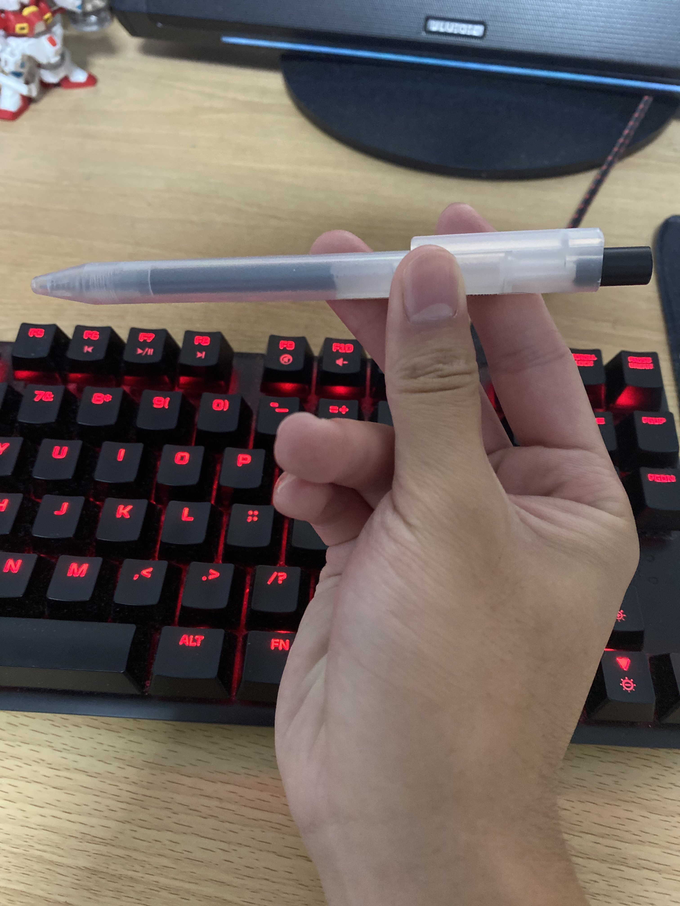
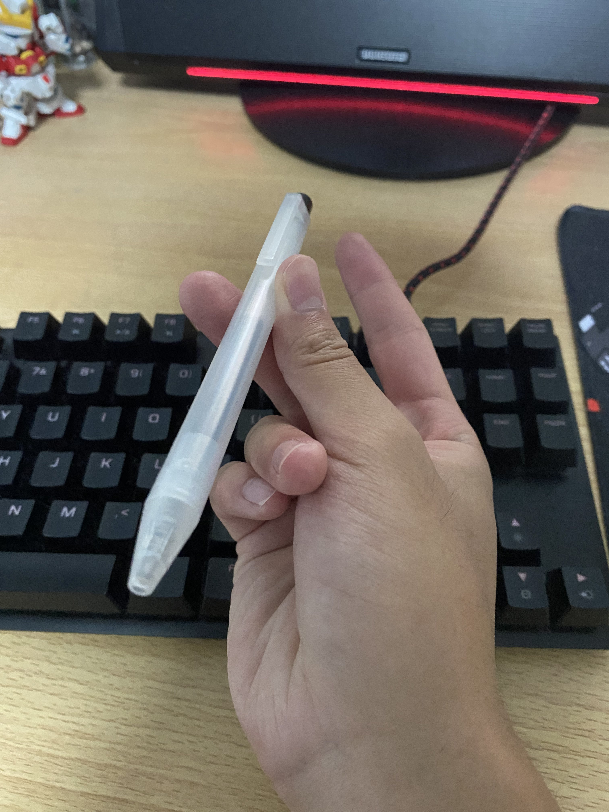

Although I'm not the best at it, I can potentially teach someone very basic pen spinning tricks.
For the thumbaround, you want to hold the pen straight and in between your thumb and you index + middle finger.
Push in gently towards your thumb with your middle finger and move your index finger outwards a little bit.
If you feel the pen wrap around your thumb, return your index finger to catch the pen.